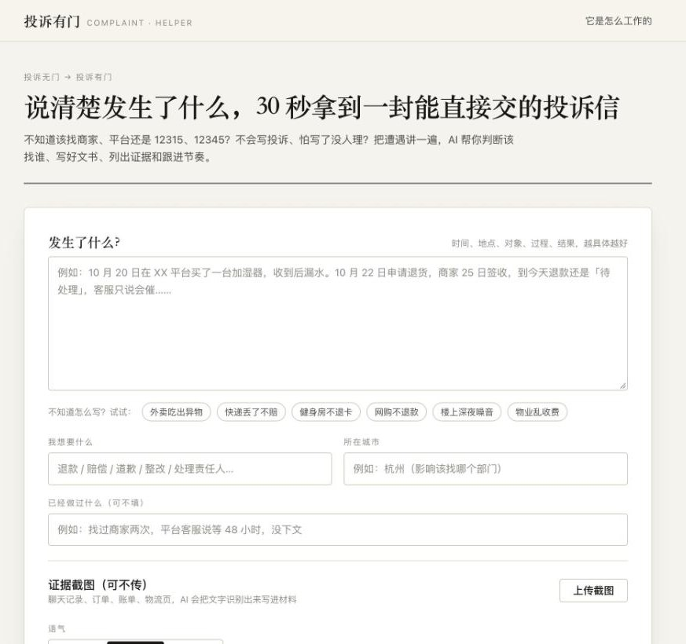

投诉有门
给遇到消费纠纷、服务问题的普通人用。痛点：不知道该找商家、平台还是 12315、12345，不会写投诉，写了没下文不知道怎么跟进，最后选择忍了。选题来自涌现奖许愿池里「帮我写投诉」的愿望，516 票，没人做。把遭遇讲一遍，30 秒拿到该找谁、一封能直接交的投诉信和跟进节奏。线上地址 ↗
怎么实现
说清楚，就能投出去
Before不知道找谁、不会写、没下文After一次拿到渠道、文书、证据和时间线
01讲清遭遇👤 人工
- 写发生了什么、想要什么、在哪个城市、已经做过什么；可传聊天和订单截图，AI 把文字识别出来；选语气：温和、坚定、强硬
02判断找谁🤖 AI
- 给渠道阶梯而不是一堆热线：先平台、再 12315、最后 12345，每级写入口在哪、多久答复，已找过的直接跳下一级
03写文书🤖 AI
- 一封能直接复制提交的投诉信，另附 200 字精简版；只用人给的事实，缺的用「请补充」占位，不编订单号和金额
04证据与跟进🤖 AI
- 证据清单：已有的、还缺的、去哪拿；跟进时间线：几天没回就升级；成功率体检：直说诉求哪里不合理，给更可能达成的替代诉求
长什么样
